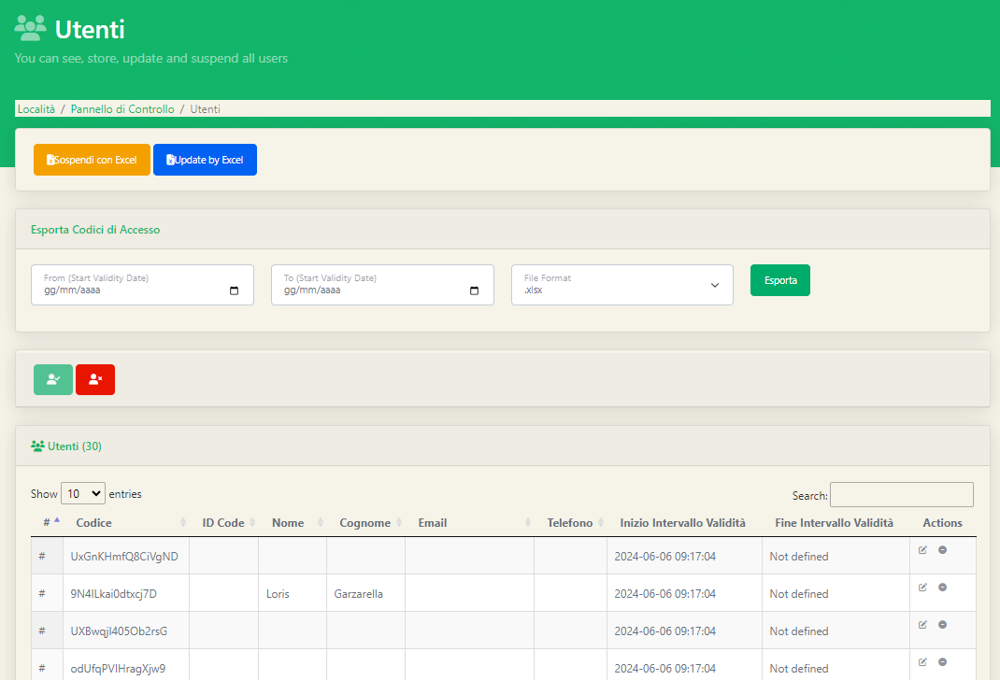

Sul software è presente anche una pagina di riepilogo per i membri di un'utenza, ovvero gli utenti. Cliccando la voce Utenti sulla Sidebar potremmo visualizzare una pagina di riepilogo di tutti gli utenti, molto simile alla pagina delle Utenze vista precedentemente. 
Anche in questo caso, come per le utenze potremmo svolgere due azioni massive: la sospensione di tutti i codici di accesso e la modifica delle informazioni degli utenti. Le stesse azioni potranno essere svolte anche manualmente per ogni utente cliccando gli appositi tasti all'interno della colonna Actions. Come per le utenze è disponibile una videata apposita per gli utenti sospesi.
Nella parte superiore della pagina, sfruttando gli appositi filtri è permessa anche l'esportazione con excel di tutti i codici utente con le loro relative informazioni.